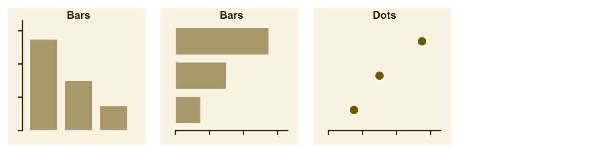
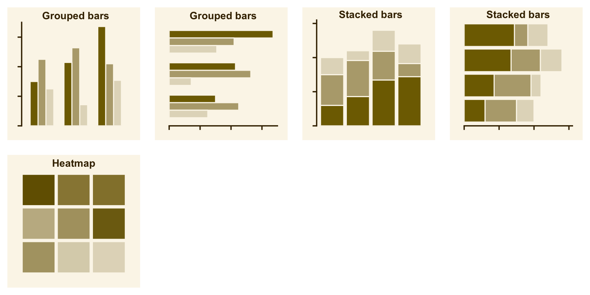
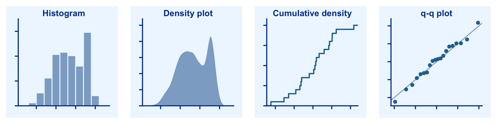
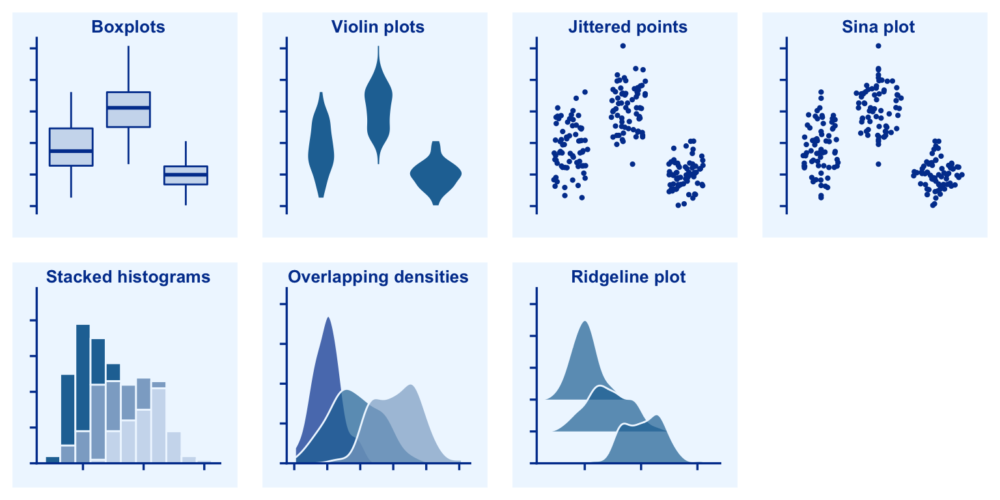
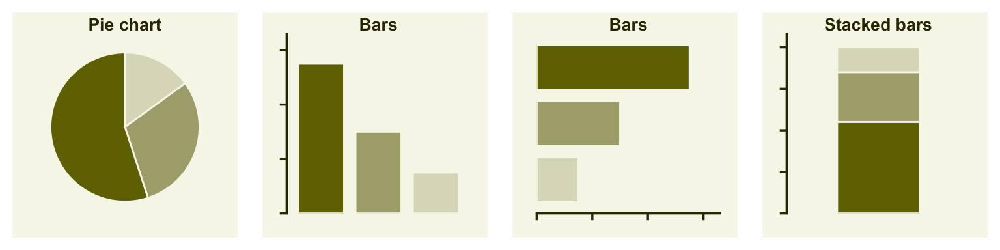
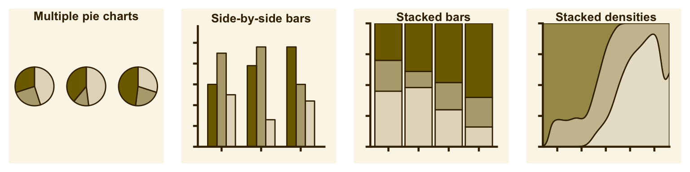

4 Directory of visualizations
This chapter is a work in progress and will be updated as additional chapters on different visualization scenarios are written.
4.1 Amounts

The most common approach to visualizing amounts (i.e., numerical values shown for some set of categories) is using bars, either vertically or horizontally arranged (Chapter 5). However, instead of using bars, we can also place dots at the location where the corresponding bar would end (Chapter 5).

If there are two or more sets of categories for which we want to show amounts, we can group or stack the bars (Chapter 5). We can also map the categories onto the x and y axis and show amounts by color, via a heatmap (Chapter 5).
4.2 Distributions

Histograms and density plots (Chapter 6) provide the most intuitive visualizations of a distribution, but both require arbitrary parameter choices and can be misleading. Cumulative densities and q-q plots (Chapter 7) always represent the data faithfully but can be more difficult to interpret.

Boxplots, violin plots, jittered points, and sina plots are useful when we want to visualize many distributions at once and/or if we are primarily interested in overall shifts among the distributions (Chapter 8). Stacked histograms and overlapping densities allow a more in-depth comparison of a smaller number of distributions, though stacked histograms can be difficult to interpret and are best avoided (Chapter 6). Ridgeline plots can be a useful alternative to violin plots and are often useful when visualizing very large numbers of distributions or changes in distributions over time (Chapter 8).
4.3 Proportions

Proportions can be visualized as pie charts, side-by-side bars, or stacked bars (Chapter 9), and as in the case for amounts, bars can be arranged either vertically or horizontally. Pie charts emphasize that the individual parts add up to a whole and highlight simple fractions. However, the individual pieces are more easily compared in side-by-side bars. Stacked bars look awkward for a single set of proportions, but can be useful when comparing multiple sets of proportions (see below).

When visualizing multiple sets of proportions or changes in proportions across conditions, pie charts tend to be space-inefficient and often obscure relationships. Grouped bars work well as long as the number of conditions compared is moderate, and stacked bars can work for large numbers of conditions. Stacked densities (Chapter 9) are appropriate when the proportions change along a continuous variable.